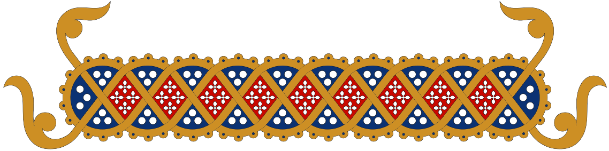
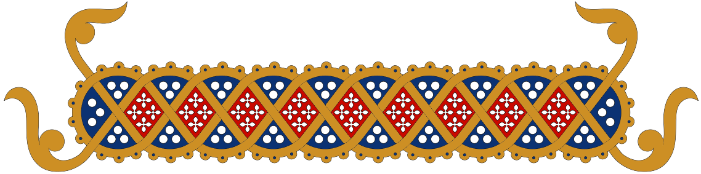
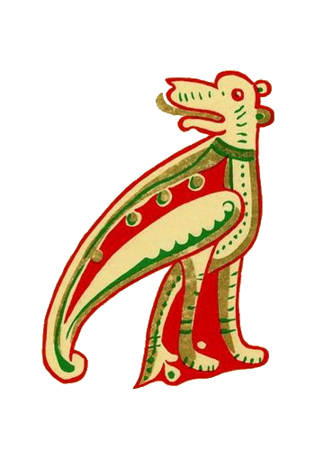
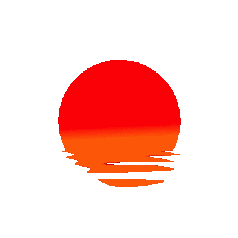
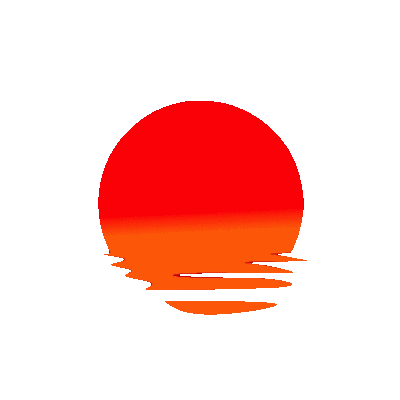

Andrea
Slavic Gospels Style - Before 1500
Choice
The Gospel style is inspired by a family of gospel manuscripts of the slavic orthodox tradition. Of this family, one of the most famous groups are the Ostromir Gospels, beautiful illuminated manuscripts with orthodox-style decorations, mainly concentrated around the title, the first letter of the chapter and the footer.


The choice is motivated both by a personal appreciation of these gospels, on which I did my thesis for the bachelor's degree, and by the assignment of creating a web style based on before printing books. One of the main difficulties of recreating this as a web style was finding appropriate and compliant images for the header and the footer: while being easily found in a digitized format, they were not in a shape or quality that could be used in a web page, so we sorted on a different solution, which was trying to recreate the position of the decorations and illuminations, the font and the page layout.
Background
The background is just the image of a simple sheet of parchment, repeated x times as the length of the page, which stretches for the whole width of it. The second background fixed on the top of the page is inspired by the decorations around the title of the slavic gospels

 

The palette and the kind of ornaments are pretty similar, while the only difference is on the shape of it: older slavic gospels heavily rely on a rectangular decoration, but none of the ones I found where suited for the task of a both readable and responsive header frame: two mirrors of the first image were used, so that they could move alongside the viewport. A more rectangular frame was used instead for the images:

Floral patterns are often used throughout the orthodox, byzantine and slavic decorative tradition, alongside the Rushnik pagan tradition. The problem in using the original frames and the ones found throughout the internet was the lack of vector images or PNGs that could easily be corrected without finer editing skills. This style heavily influenced the illustrations by Ivan Jakovlevič Bilibin, a XX sec illustrator and artist who painted illustrations for e.g. Puskin fairy tales. One favourite creature often painted by him was the Alkonost, a mithical bird of paradise, and a tribute to this was made in the gryphon-looking monster around the edges of the footer. For the last paragraph of the text a decoration was used as the decorated end of chapter of the gospel.
Fonts and Layout
The script used in the gospel manuscripts was a kind of minuscule resembling the uncial byzantine script. Indeed the slavic orthodox tradition relies heavily on the byzantine style, so an uncial latin font was chosen to resemble at best the slavic minuscule. One of the features that stand out to the eye when looking at the Slavic minuscule is the concentration of abbreviations, terminals, serifs and diacritical marks, which recreate a line of full letters, each almost independent. Trying to recreate this in a latin script was almost impossible, so we sorted to add just a pixel of letter spacing.
The font color looks between a red and brown color, so a ‘color: #520404;’ was chosen: The capital letter instead was simplified for the almost impossibility of finding a font that resembles exactly the beautiful decorated letter, so the proposed solution was to create either a background image with a pattern that could generalize the decoration and then apply on top the letter or to find a general illuminated capital letter. The latter solution seemed more readable and less difficult to look and read at in a web context. For this the ‘Camelot’ font was used. The title script in the gospel resembled the uncial script but bolder and with more serif, especially in the general family and in later time. For this the Angel Rhapsody font was used, which relies on serif, decorations and an almost gothic look. The color #D4AF37 was used.


For the layout I maintained both the one-column and the two columns layouts, with the latter only for bigger viewports. The gap between the columns was calculated as 3 times the length of a single letter, 1.3 rem.
References
PostVaporwave - 2040
Choice
The 2040’s style is not an ideally futuristic style, but is the realizations of what some people, 30 years before, imagined the future to be like. Vaporwave in itself is a microgenre of electronic music, a visual art style, and an Internet meme that emerged in the 2010s, and keeped its mainstream until now. One of the heritage of this style are voiceless background music, often packed in playlists, that is listened to “chill” or while working on something else, often on a personal computer, such as famous youtube playlists “lofi hip hop radio - beats to relax/study to” and so on.
A lot of meme playlist emerged from this style, remarkably in Italy “lofi Alberto Angela mix - beats to relax/quarantine to” , “space lo-fi” and so on. Meme culture has made its way to the mainstream in the last two decades, and it’s not impossible to imagine that this will keep its momentum for decades to come. During the quarantine of 2020 “vaporwave” like playlists made a comeback with a new style, while a dystopian, apocalyptic and virtual imagery made its way to a wider population. This style is a combination of all these cultural references, without a solid connection just as the vaporwave style, with an embedded Spotify player with a voiceless playlist and an “easter-egg” in the layout.
Background
The whole style is made to relax and please the eyes. A colored, gradient background which slowly moves is used to represent waves, with a future-funk / vaporwave palette. The whole palette is based on pastel colors, with white as the text color. The last color, #ffd700, was used for the dotted border and the text selection. The gold is not so often used in vaporwave, but it's common in the future-funk, cyberpunk styles, also it sitted well with the palette while creating conrast with the actual text.


The header gifs are kind of staples of the waporwave style: a greek column and a 3-D, silver column made of bodies that becomes visible when hovering.

 

A sunset gif, another common symbol of vaporwave, was made as background of a capitalized first letter. The responsive layout of the page is such that on shrinking, the text column becomes one as the greek column on the header.
Fonts and Layout
The fonts used are both sans serif; Montserrat is a plain typeface, regular in dimension and without changes in the stroke width, while Roboto is largely geometric, with open curves and allows letters to be settled into their natural width. Both fonts were chosen to resemble the aesthetic and offer a more natural reading rhythm, such as humanist and serif types The title is bold and has a little reduced letter spacing, to almost make the white of the letters touch, while a dense web of text-shadow of the #E485F8 color creates an almost three-dimensional effect.
Beyond Visual
To enhance the 2040 style I decided to add a Spotify player via jquery, because music is an essential part of the vaporwave style and connects all the aesthetical references I chose for this style.

References
Amanda
Early Art Nouveau - 1800
Choice
In the last decade of the 19th century, Art Nouveau entered the European Art scene. Art Nouveau style was born in the first place as a reaction against the academic art, eclecticism and historicism of the 19th century and reached its greatest popularity between 1890 and 1910.
It can be defined as a multifaceted style, involving many different artistic fields such as: architecture, applied arts and graphic design, in particular decorative arts. The style stands out for its vital impetus that may be the cause for the popularity it has had in recent times. Some recurrent motifs are clearly recognisable among all the various expression forms of the art style. Just to point out, as an introduction, the ones that are particularly important for our purpose and that, for instance, represent the fundamental structure of this style; we are going to list them.
- Naturalistic themes (flowers and animal related inspiration)
- Use of iconic, stylistic and typological motifs derived from Japanese Art.
- Linear and chromatic arabesque morphology, rhythms set on the curve and its variants, patterns of spiral and whirls.
- Use of cool and transparent colors enriched with gold inserts.
- Dislike for regular proportions and symmetrical balanced forms.
- Search for musical rhythms and undulating and sinuous movements.
- Insistent use of the line, intended as dynamic energy and ornamental value.
The choice was driven from the highly decorative potential of the style, seen as a breaking point for the entire graphic design panorama of XIX century, and for the impact it had in the French Art movement of XX century which led to the transition from Art Nouveau to Art Decò. The starting point in the development of the style as an inspiration was the poster for Gismonda (1894) (Fig.1) realized by the painter Alfons Mucha, depicting the Parisian actress Sarah Bernhardt.
In particular the painting was taken into consideration in the version accompanied by the decorative leaf motif (Fig. 2). We tried to replicate the vertical movement of the poster. For this reason we decided to apply the leaf-decorative motif taken from the picture as a lateral background. As for the ultimate realization we have taken inspiration also from other sources.


Background
For the background of the entire page we took a different source of inspiration able to conciliate the Gismonda poster inspiration and the necessity to represent a text.

In particular we took as a reference The Art Nouveau publicité galerie Samuel Bing Paris of 1895 (Fig.3) . And decided to combine the background with the leaf-motif taken from Fig. 2 As for the realization of the frame for the title we decided to add a golden frame to enrich the ornamental value of the page in accordance with the decorative motif of Art Nouveau style and to conform to the decorative pattern of the Gismonda poster. At the end we extracted from The Art Nouveau publicité galerie Samuel Bing Paris of 1895 two ornamental images reminiscent of ornamental motifs of Japanese Art. In particular Fig. 4 and Fig. 5
We added them at the four corners of the frame to obtain the effect of the decoration surrounding the text. For the last background decorative motif we used once again a nature-related theme:
We used two images which are visibly different from each other, even if on the same style to satisfy the style desire for non symmetrical form. The resulting effect is conform with ornamental borders and title pages which were based on the style of medieval manuscripts (from: Link)
Colors:


Fonts and Layout
For the title we decided to use “Edda” a serif typeface, inspired by Art Nouveau style; while for the body we decided to use “Berolina” an Art Nouveau typeface, originally created by Wilhelm Gronau type foundry. The principle we have followed for the choice of the fonts and the general display is in compliance with Art Nouveau principles regarding readability citing Morris: “should be easy to read and should not dazzle the eye...I found I had to consider chiefly the following things: the paper, the form of the type, the relative spacing of the letters, the words, and the lines; and lastly the position of the printed matter on the page”. All the choices we made regarding fonts and display properties followed this basic principle. In conclusion, the choice for two columns was made in order to maintain the compactness and vertical display of the Gismonda poster.
References
Minimalistic 2021 - 2025
Choice
Minimalism is one of the top trends that are going to be relevant in the next five years. The tendencies are towards a basic style, ideally projected into an extreme form of essentiality. The idea behind is to obtain an elegant graphic design by getting all nonessentials off the page. Removing all the elements that represent a distraction for the eye of the user is the first step, in order to focus the attention on the content. The purity of the graphic form restores the immediacy of the concept conveyed through the use of neat lines.
The choice was driven from the possibility to explore and imagine a foreseeable future in the light of a retro fashion, modernized by the attention towards the readability of the text. The only real decoration is represented by the use of a sinuous and expressive font. It is a future that recalls a black and white esthetic but it is able to provide new elements as innovations. We decided to combine different inspirations together in order to achieve a consistent design. We are going to list the main ideas we considered for the realization of the design:
- Minimalist design
- Colorless design
- Combination of different fonts
- Oversized title

The first inspiration was taken from a page of the Journal Vogue Arabia, that we took as a reference for the oversize style of the title. We decided not to maintain the display look in two columns, in order to be consistent with the decision of an essential design.
Background
The background color with code:#f7f7f7 was used in order to create contrast with the colour of the text #333333.


The only other element we decided to add is represented by a simple line; inserted as a linear gradient following the color palette: #EEEEEE , #DDDDDD, #CCCCCC, #BBBBBB, #333333


Fonts and Layouts
The fonts reflect the contrast between the extremes (black and white) mediated by lines (figuratively, scales of gray). The font used for the h1 titles is a serif, oversized Ranking Caps, black bold, while the subtitles, h2 and everything else apart from the h1 is in the direct opposite, a small, light cursive-handwritten font called North Avellion. They come together representing a perfect pair of serif and script. For the body we decided to use Fiorina, a modern Didone-style serif type-face. In order to achieve a full colorless look we decided to apply a grayscale filter over the images and we added as border of the images a linear gradient based on the style of the former: #EEEEEE #DDDDDD , #CCCCCC , #BBBBBB , #333333
References
Arianna
Teletext Style - Second Half of 20th Century
Inspiration
Inspiration: Golden years of teletext services, in particular BCC’s Ceefax, which was made available to the public in 1973, as the first teletext service all over the world. During the following decade, similar services were developed in many European countries, and 1980’s became the coming-of-age era of teletext and its characteristic aesthetics.
Choice
We primarily chose Teletext as the second half of the 20th century style because of the unmistakable distinctive traits, that makes it immediately recognisable to the most. In addition, we found interesting the possibility to explore a non-paper-born typographic style, though with digital means that allow to overcome almost all the original settings and technical limitations that determined the characteristic teletext style.
Background
As we wanted to reproduce the main teletext chromatic effect, the body was given the property background-color: #000000; and then all the other colourful elements were customised on it, in order to render the eye-catching colour combinations generally used in teletext services.
Fonts
Fonts and text-styling: In this case, instead of using online OCR tools for font identification and trying to use a font-family as visually close as possible to the 1980s originally adopted ones, we preferred sticking to the BBC adopted a ModeSeven-derived font, based on bitmap fonts of Teletext televisions, 1980s-vintage Videotext terminals and the BBC Micro computer. The character definitions were worked out in 1998 by Andrew Bulhak from a bitmap version of the Teletext font created by James Fidell. ModeSeven is normally displayed at 20 pixels and is characterised by high display quality and light storage trace. However, for displaying purposes, we decided to increment the font-size to 24 pixels and to increment the line height, as a compromise between the original ratio and the better displaying capabilities of the new media.
The exact version of the font used in this project is MODE7GX3 (by Galax 2014), and it was selected because the aspect ratio is close to 4:3, and also to Teletext display of a standard vintage TV. The characters are 6 by 10 logical blocks, and the screen is 25 rows of 40 chars. (40*6*1.3)/(25*10)=1.248. So, the aspect ratio of pixels is 30% wider than the height.
DOUBLE HEIGHT EFFECT: The typical teletex double height effect is rendered with (-webkit/-moz)-transform: scaleY(2); Used to highlight h2, h3 elements and .subtitle class (even when it is assigned to a p element)
Illustrations, visual effects and motives:
Cover: header element is inspired by Ceefax homepage. The .subtitle class and h2 element are given a double-height effect, while the title is given an uppercased different font. The colour pattern is the typical eye-catching yellow-on-blue, which was originally proposed by Ceefax and then widely used by other teletext services.
When hovering on
.byline class: the colour effect and matching are a tribute to 1987 RAI TELEVIDEO homepage. The rendering of the vertically split colouration was realised with background: -webkit-linear-gradient(top, #ffffff 0%,#ffffff 50%,#00ff00 50%,#00ff00 100%); -webkit-background-clip: text; -webkit-text-fill-color: transparent;
.label class: .label-classed elements are given the property text-transform: uppercase and an highlighting text colour, so to reproduce the effect of RAI-TELETEXT 1980s news page.
hover effects: h1, header and sections, when hovered, display a visual retro TV noise effect either on background or on border(s), so to exploit the technical tools provided by css in order to enhance interactivity of the reading experience. The noise effect is thus provided by setting a noise-effect gif as background image which substitutes the 10px blue border when the section, the h1 or the header are hovered. For the same purpose, a 10px solid red border is added as paragraph frame, so to reproduce the effect of the remote telecommand selection implemented in teletext original pages. https://cleanfeed.thetvroom.com/3552/features/the-history-of-pages-from-ceefax/
Span elements for person, place and entity are given a specific colour each, so to reproduce the semantic highlighting effect implemented in Ceefax pages. However, the colour is activated only on hover for readability reason, because of the high number of spans element contained in some of the articles of our issues.
Separators: the marked effect of visually well-separated sections is reproduced through bottom-border styling. In particular, the 10 px solid blue bottom-border is used to highlight the separation between sections, while the dashed cyan border visually separates a paragraph from the following one. The reference for the sections pseudo-separator is a screenshot of Electra Teletext, WKRC-TV, Cincinnati, Ohio (1985-01-03). https://it.qaz.wiki/wiki/Teletext
Flashing effect: The teletext flashing effect is realised with animation: flashing 1.3s steps(5, start) infinite; -webkit-animation: flashing 1.3s steps(5, start) infinite; color: #ffff00; and @keyframes flashing { to { visibility: hidden; } } @-webkit-keyframes flashing { to { visibility: hidden; } }. (link). This effect animates the counter clock imported with js at the top-right corner of the page and the header subtitle.
Cursor: inspired by alien invaders, reproduced with https://www.pixilart.com/draw. It is the only element which is given a colour not included in the original teletext palette, so that it stay visible also when hovering colourful elements (image reproduced via https://www.pixilart.com/draw, resized with https://www.photoenlarger.com/ and then saved in .cur format).
Text body: The original standard provides a mono spaced 40×24 character grid. https://en.wikipedia.org/wiki/Teletext
Images: For images we adopted a compromise solution. First of all, it was not possible to handle the articles images in the same way we treated the website images for the style switch, both because of storage overload and because of the low resolution of some of the images contained in the articles we chose. At the same time, giving an effective pixelated effect was almost impossible without the usage of complex solutions such as canvas. So, we decided to maintain the alternated displaying positions of the images proposed in the horoscope Rai teletext page (https://www.youtube.com/watch?v=EBItf3UxXWA ) , adding an hyper-saturated filter with 105% brightness level and a 236 degree hue rotation (filter: brightness(105%) hue-rotate(236deg) saturate(1000%); ), in order to realise a mixed effect, summing up the exasperated brightness of first 1980’s music videos and the extreme colour tones of Teletext classic 8-colours palette (filter generated with: https://cssgenerator.org/filter-css-generator.html ). Moreover, we set the image-rendering to pixelated value, so that -when scaled up- the rendering maintains an effect which reminds to the teletex pixel aesthetics. In conclusion, we added an animated gif as border image, in order to reproduce the vintage television noise effect.


Measures:
We chose to display the body of the text in a 40-characters-width container, ad a tribute to the original teletext layout of 24 rows x 40 characters.
Colour Palette: the whole style was implemented using only the 8-colours teletext classic palette ( 000000 0 black, ff0000 1 red, 00ff00 2 green, ffff00 3 yellow, 0000ff 4 blue, ff00ff 5 magenta, 00ffff 6 cyan, ffffff 7 white). The colour patterns and associations were mainly inspired by the Teletexto TVE (Programaciòn atresmedia page), which provides seven highly-readable bi-colours associations. (https://www.antena3.com/teletexto/home.htm?pag=800 )


Tables: tables style was inspired by the football results tables, where rows colours generally alternate.
Lists: li elements are yellow-coloured, so to emulate the outlook of the directory of teletext selectable pages in 1980s Ceefax layout.
Blockquotes, Figcaptions and Captions:Captions and Blockquotes are highlighted and at the same time separated from the rest of the displayed text with a specific styling associating a background and a text colour which enhance one another. In particular, the visual reference is provided by the Spanish Teletexto TVE Programaciòn Atresmedia page. In order to provide variation, the figcaptions are styled differently depending on the odd or even number of the associated figures.
References
Galilei - Between 1500 and 1800
Inspiration
Galileo Galiei’s original works, in particular the Sidereus Nuncius, an astronomical pamphlet published in 1610.
The choice
For the implementation of the 1500-1800 style, we chose the Galilean production because -thanks to the telescope observations – it represents an astonishing turning point in the history of Western culture and Science in general. Moreover, the corpus is well documented, thus providing many visual references to base a work of CSS reproduction on.
Background
The background image is a digitally-edited version of an original page of the Sidereus Nuncius, from which the text was removed. Since we used a left page as background, also all the layout choices refer to this decision. The position of the background is fixed, so that the background image maintains more or less its original proportions, without stretching inadequately.
Fonts
For the Galilean style, the choice of the fonts was strictly based on OCR tools and visual similarity analysis. Moreover, since some fonts very close to the original weren’t freely available, e.g. Ballard Small Caps, we selected two fonts visually analogue to these ones, even if philologically not perfectly coherent. For the main body column we adopted JMH Legajo in its italic-style version, while for the figcaptions and for the table captions we chose the bold non italic version of the same font. For the titles, we adopted the KisMiklos font, specifying text-transform: uppercase, so to make it look as similar as possible to the Ballard Small Caps, which was one of the first results of the initial OCR analysis. Letter spacing was added for titles, in order to emulate the original letter spacing of the titles. For h2, h3 and h4 reduced line height (.8, .9) and negative bottom- margins were modified, in order to reproduce the vertically-condensed Sidereus-Nuncius typographical effect.
Drop caps and pseudo-font
background:Both Saggiatore and Sidereus Nuncius have as first letter of the first paragraph a miniated drop-cap. However, for the background of our miniatures, we chose to draw inspiration from the Sidereus Nuncius’ drop-cap, from which we removed the human-like figure and the dragon. Having obtained a visually-discrete motive, we overlayed a starry pattern derived from one of Galilei’s original illustrations of a constellation. The two layers were then overlapped and we obtained a unique .png image that we used as background of the drop-caps for the css style.
After a first attempt to use this image as background for an original font created with www.calligraphr.com, we realised that the image resolution was too poor, and many of the background image details were almost unperceivable. So, we decided to use the aforementioned tool to produce a simple font based on Garamond, to which we applied a squared frame, in order to maintain more or less the same dimensions for each letter, with a ratio as close as possible to the original drop-caps 1:1.
The initial proportions for the drop-cap were calculated in relation to the width of the page, without considering the space that was to be occupied by the metadata viewer. For this reason, in a later phase of the style development, we had to considered a 250px smaller total width. So, the initial 21wv size assigned to the drop cap was resized to 19. In this way, it remains proportional to the body column.
Decorative frame:For the decorative upper frame, we extracted a repetitive-pattern motive from a scansion of the first page of the “Saggiatore” by Galileo Galilei. Then, we removed its background with an online tool saving the file in .png format, and then we adjusted its colouration through Krita image editor.
#/media/File:Galilei_-_Saggiatore,_1623_-_214071_Pagina_16.jpg)

The image is displayed as top-border of the title, so to respect the layout of the first page of the works we used as references.
Text body and Sidenotesthe Galilean corpus presents two main textual layout renderings: one adopting the italic font for the body of the text and the normal style for the sidenotes, and the other doing the opposite. Even if our main reference, i.e. the Sidereus Nuncius, belongs to the second group, we decided to adopt the first rendering, in order to increase the readability of the captions, which already have space limitations related to the margin of the page. In addition, we limited line-height and we adopted word-break: break all, in order to maintain the visual impression of the side block of text. Captions were then translated from their original position with the translate css function, and the final visual effect was achieved through width limitation. However, we maintained the Sidereus Nuncius model for the computation of ratios between the body of the text and the two asymmetrical margins.
For all paragraphs after the first one of each section, we calculated an indentation of more or less 3 letters, corresponding to a 4% of the width of the body.
Images: Even if in the reference works from which we drew inspiration the images layout was managed in very different ways, we finally chose the Sidereus Nuncius style over the others. In particular, in this layout, images have the same width of the text, with very few or null margin size. The final visual impression is that of a dense block of text and images. The ancient look of the images was reproduced with a filter: filter: grayscale(85%) sepia(50%); -webkit-filter: grayscale(85%) sepia(50%); -moz-filter: grayscale(85%) sepia(50%); }
Colour PaletteFor the colour palette selection, we used the Google Plug-in ColorZilla in order to extract the main colours from the scansions of the original works.


Blockquotes, lists and tablessince for blockquotes, lists and tables we lacked a reference, we decided to implement a visually coherent style drawing inspiration by the material we had.
WebsiteThe four issues images are extracted from Sidereus Nuncius original scansions, from which we removed the background. Since the four issues are conceived to cover a 1-month time span based on a weekly turn-over of the issues, we assigned to each of them a lunar phase. The images of the “about us” section are instead edited by using an online tool to add a pencil-effect filter with raised contrast , that we used to reproduce the ink hand-drawing effect.
References
Benedetta
Millennium Bug - 1999
Choice
MILLENIUM BUG: THE YEAR 2000 PROBLEM
A computer flaw, the so-called "Millennium Bug," led to anxiety and the Y2K (Year 2000) scare. When complex computer programs were first written in the 1960s, engineers used a two-digit code for the year, leaving out the "19." For the arrival of year 2000 , many believed that the systems would not interpret the "00" correctly, therefore causing a major glitch in the system.
As the year 2000 approached, computer programmers realized that computers might not interpret 00 as 2000, but as 1900. Many Activities that were programmed on a daily or yearly basis would be damaged or flawed:
- Banks, which calculate interest rates on a daily basis, faced real problems. Interest rates are the amount of money a lender, such as a bank, charges a customer, such as an individual or business, for a loan. Instead of the rate of interest for one day, the computer would calculate a rate of interest for minus almost 100 years!
- Centers of technology, such as power plants, were also threatened by the Y2K bug. Power plants depend on routine computer maintenance for safety checks, such as water pressure or radiation levels. Not having the correct date would throw off these calculations and possibly put nearby residents at risk.
- Transportation also depends on the correct time and date. Airlines in particular were put at risk, as computers with records of all scheduled flights would be threatenedafter all, there were very few airline flights in 1900.
The simplest solution was the best: The date was simply expanded to a four-digit number. Governments, especially in the United States and the United Kingdom, worked to address the problem. In the end, there were very few problems. A nuclear energy facility in Ishikawa, Japan, had some of its radiation equipment fail, but backup facilities ensured there was no threat to the public. The U.S. detected missile launches in Russia and attributed that to the Y2K bug. But the missile launches were planned ahead of time as part of Russias conflict in its republic of Chechnya. There was no computer malfunction. Countries such as Italy, Russia, and South Korea had done little to prepare for Y2K. They had no more technological problems than those countries, like the U.S., that spent millions of dollars to combat the problem. Due to the lack of results, many people dismissed the Y2K bug as a hoax or an end-of-the-world cult.
Layout
The famous warning signal of the bug in the yellow back-ground has a strong influence for the choices of both the layout and the colors used. Texts in papers and magazines are characterized by a subdivision of two or three column. This subdivision facilitate the reading process in printing tools but it’s not very versatile in the digital copy. For this reason we organize the bodies of our papers diving them into two columns (column-count: 2) that will merge in one for small devices. Each paragraph is divided by a border column of solid black positioned after their content. Images in the magazines are larger, intrusive, important often placed under the corner of the page, but we have got to find a compromise between the not versatile choice to render all the images bigger so we decide to maintain a width of 70%, insead of 100%. Typically some words in the title of the article, those that most emphasize the content, are printed in another font and color, so as to immediately stand out from a visual point of view. For this reason we have different colors and styles for the main title and the subtitles.
Background


The predominance of yellow and black is freely inspired to the logo that was very popular of the black and stylised bug inside a warning signal with a back-ground color of yellow, as stated in the layout content. In fact we chose the black for the back- ground color for the title and yellow for the entire body. White was chosen for both the subtitles, the columns, in the border of the columns and in figure captions in order to enrich the palette and making the text more readable. The palette is not very rich and full of colors but its purpose is to create a strong stylistic contrast with great evocative power. For the title a flash animation from red to black was inserted in order to have the idea of something that recalls the warning signal and the theme of dystopia of the collapsing systems.
 Fonts and Layout
Fonts and Layout
The aim of this style is to try to integrate the most iconic fonts over the decade of 2000 in a coherent way. Among the huge varieties of styles that characterize this eclectic decade, we choose Multicolore for titles and sub-titles and Gotham for the body.
Like the name already reveals, Multicolore is a vibrant multi-colored and sans-serif typeface. It's based on a rounded modular design system. It was used for magazines and papers among the ’00, we extract it trough https://www.whatfontis.com/. The lively animations perfectly compliment the multitude of colors and for this reason we chosen a flash animation for the title, recalling also the dystopia atmosphere of the millennium bug. For a more minimal look we choose a single color.
It’s a geometric sans-serif typeface family designed by American type designer Tobias Frere-Jones with Jesse Ragan and released from 2000. It became very popular due to its appearance in many notable places, included in Barack Obama's 2008 presidential campaign. Gotham has a relatively broad design with a reasonably high x-height and wide apertures, featuring four widths, eight weights, and separate designs for screen display and a rounded version. Developed for professional use, Gotham is an extremely large family and the version that was chosen is book type for its readability and for its versatility in the web page. As their creators said: “Each character just feels ‘normal’ and ‘right’”. Gotham's letterforms were inspired by examples of architectural signs of the mid-twentieth century.
Bauhaus - Start of XXI Century
Style
The roaring twenties are characterized by great changes and innovation not only from a cinematographic, literary and musical point of view but also towards graphic design and typography. Also the representation of information was subject of in-depth reflections, revolutionary thoughts and in some cases matter of study of important design schools. In this era of great industrial expansion, of revolutionary social movements and of an artistic taste mainly influenced by art decò, graphic design also turned towards innovation, in a research – albeit divided into numerous different currents – towards the essentiality of the form and the objective truth of the written message.
It’s almost impossible to find a real date of beginning of this great revolutions, but in 1917 appears for the first time the term “neoplasticism” mentioned by Piet Mondrian and Theo van Doesburg in the magazine ‘De Stijl’ founded by van Doesburg. they used it to describe their new idea of art, characterized by abstraction, essentiality and geometry. This artisti phenomenon starts in netherland but it had influences also in northern Europe especially in the Weimar Republic. The keywords of this styles are: abstraction, pure geometrical forms and universality through the simplification of the visual compositions. This artistic movement aims to reduced to the essentiality of its forms and colors: lines that unfold horizontally and vertically building bi-dimensional spaces painted in red, blue, yellow, white and black. The aim was to bring the public into intimate contact with the immutable core of reality they wished to represent in its works. The Weimar Republic in particular, were a fertile land where a new artistic movement was born. The architect Walter Gropius was the “father” of, with its full name, Staatliches Bauhaus firstly based in Weimar, then in Dessau, Berlin until 1933, when it was closed by the Nazi censorship. Due to the post-industrial revolution cultural climate there was a deep link between art and its functionality, especially in the context of industry, trade and crafts. Functionality in all the arts even in typography where in 1923, started was considered primarily as a communications medium, concerned with the clarity of the message. But was the teacher Herbert Bayer, in 1925 that commissioned to design a typeface for all Bauhaus communications, created an idealist typeface, coming to a universal, simple geometric sans-serif font.
Great revolutions took place also in the East(not only West or the Europe). In Russia the Constructivism was born in 1915, it was an artistic movement from the genius of Vladimir Tatlin and Alexander Rodchenko. Constructivists used art to access to objective truth: they rejected decorative stylization in favor of the industrial assembly of materials, the aestheticism of naturalistic art in favor of an art capable of reproducing a gaze based on the constructive act of the individual elements of vision. Geometrical forms, bidimensional shapes, flat colors and diagonal bold characters are characteristics typical of the constructivist movement in typography and graphic design. But in the 30s the movement was critized and rejected by the government of the soviet propaganda.
Layout
Bauhaus newspapers are characterized by principles of asymmetry and balance between full and empty elements within the page. For this reason we ideallistically inscribe each paragraph of our text inside a geometric figure using p:nth-child(odd) and the whole body is delimited left and right delimiting strong border with primary colors. The aim is to render the idea of breaking down the text into blocks and to functionally represent at a first glance the semantic subdivision of the article itself into chapters and paragraphs.
Bauhaus uses a rotation of 45° or 90° for their fonts, but for finding a compromise between the readability of the article and a coherence among the specific characteristics of the style we choose to put a slight rotation in order to have a better functionality of the article itself using transform: rotate(-5deg)
A strong difference distinguishes the header from the body of the text. In the header the geometric figure oftenly used in cover of the magazines appear as a “logo”. Geometric figure used in this section are those freely inspired by the Knadiskiji experiment( go to section color)
Colors
Primary colors with the addition of white as a union of all colors and black as the absence of any color. Red, blue and yellow balance the relationship between light and dark, the brilliance and saturation of colors. In 1923 Kandinksij conducted a very famous questionnaire in which he asks his students to associate the three primary colors with the three basic shapes (square, circle and triangle). Despite the disparate answers, the painter manages to conclude that the square is inherently red, the triangle yellow and the circle blue. Surprisingly, recent psychology studies also confirm this hypothesis. text-shadow was used for the title as a triute to the cover font titles used for magazines.


Fonts
According to Bayer’s approach, the serif are unnecessary and also was not so important the distinction between upper and lowercase. The pupose is to give the maxium of functionality. For this reason the main charateristics are the elimination of the capital letters and the representation with the fewest line possible. For this reason we find the font family ‘bauhaus’ for the title and futura font, one of the most popular at that time for the body. In fact it was created by Paul Renne in 1927 and it is inspired by artistic schools of De Stijl, soviet constructivism and of the Bauhaus it has the defined geometric structure.